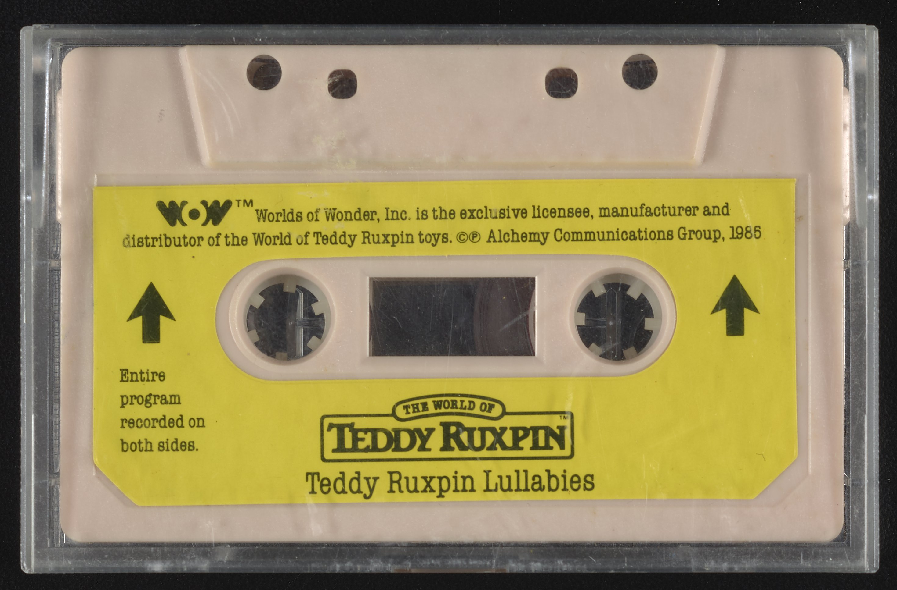
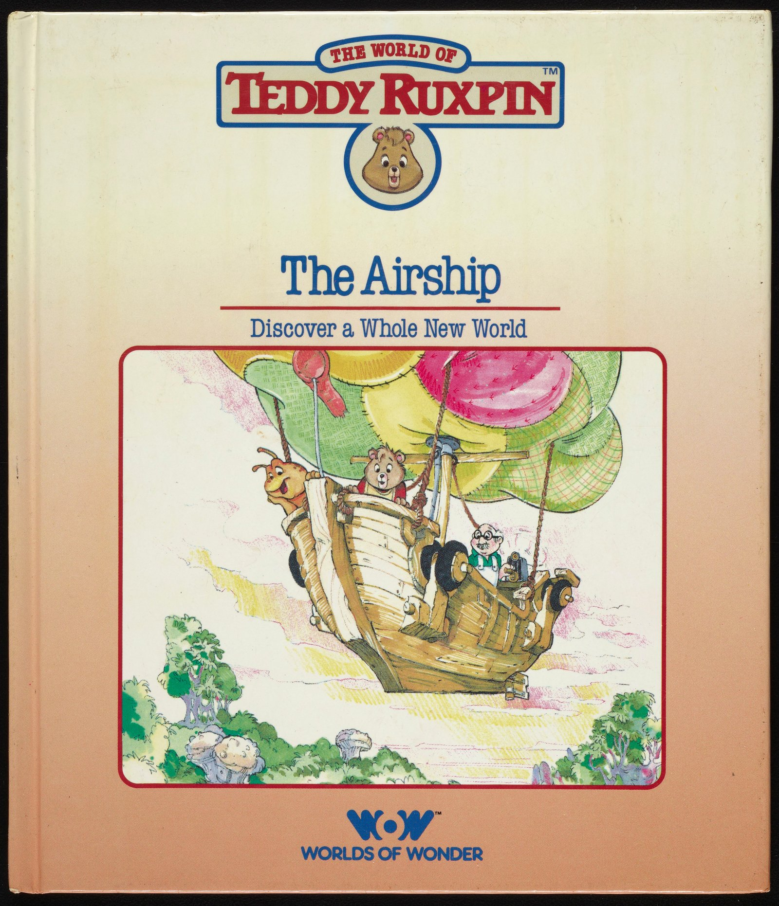

Teddy Ruxpin
The animatronic bear that read stories off a cassette tape

Overview
Teddy Ruxpin is an animatronic children's toy in the form of a talking bear-like 'Illiop.' A cassette deck is built into its back: the user inserts a story tape, presses play, and the bear 'reads' the story aloud while its eyes and jaw move in sync. Worlds of Wonder, the Fremont, California company launched by ex-Atari executives Don Kingsborough and Mark Robert Goldberg, shipped it in September 1985 at about $70. It became the best-selling toy of 1985 and 1986, drove roughly $320 million in fiscal-1986 sales, and over eight million units were produced before the company's overreach on Ruxpin inventory helped push WoW into bankruptcy in 1988.
The cassette is the interface. A standard compact cassette carries two tracks: narration audio on one, and on the other a control data stream — described in collector teardowns as a pulse-position-modulated 'eight channel digital proportion system using groups of nine pulses separated by silence.' The data channels drive servo motors in the bear's head (three in the first generation: eyes, upper jaw, lower jaw), and can route audio between Teddy and his companion Grubby so the two toys hold pre-recorded conversations. The cassette shell itself is read by the toy: Ruxpin tapes have holes in the housing that align with the deck's bias-sensing position, so the bear can tell a Ruxpin tape from an ordinary one — on a plain tape it simply plays the audio and keeps still.
Ken Forsse, a former Disney animatronics designer who had worked on the Hall of Presidents, developed the bear at his company Alchemy II, Inc. with Larry Larsen and John Davies; ex-Atari designer Larry Lynch re-engineered it down to the $70 price point. The platform spun out Talking Snoopy, Talking Mickey Mouse, Talking Mother Goose, Baby Teddy Ruxpin, and Julie (1987, with voice recognition), plus accessories including Grubby (1986), the Picture Show cassette-driven slide projector, and the Answer Box quiz system. The Science History Institute holds a 1985 Teddy Ruxpin in its permanent exhibition.
Deep dive
Before ROM cartridges were universal, Teddy Ruxpin made the humble audio cassette carry software: narration on one channel, a pulse-position-modulated control stream on the other, decoded into an eight-channel proportion system of pulse groups. The tape was the program, the program was a performance. The bear's servos — eyes and jaw in the first generation — were choreographed by the data stream, so every tape was a distinct animation score, not just an audio book.
The interface even extended to the plastic cassette housing. Ruxpin tapes were molded with holes that lined up with the deck's Type-II bias-sensing switches, letting the toy detect a 'real' Ruxpin tape. On an ordinary music tape the right channel was ignored and the bear played it as plain audio. The medium itself carried a physical handshake.
WoW treated the data-track mechanism as a chassis: Talking Snoopy, Talking Mickey Mouse, Talking Mother Goose, and Baby Teddy Ruxpin all used it, and Grubby connected to Teddy through a cable so the two-toy dialogue could be choreographed on one tape. The Picture Show projected cassette-driven slide reels; the Answer Box added button input for quiz tapes. Third-party tape makers even cloned the data-track format until WoW won injunctions in 1986.
Teddy Ruxpin made WoW the toy industry's fastest-growing company: $320M in FY1986 sales and the NES distribution deal leveraged on the bear's retail pull. But 1987's overproduction of Ruxpin inventory, an attempted junk-bond rescue, and the Lazer Tag follow-up ended in Chapter 11 in 1988. The bear outlived the company — preserved in the Science History Institute's permanent collection.
Team & pioneers
- Ken Forsse Inventor; ex-Disney animatronics designer (Hall of Presidents), developed the bear at Alchemy II, Inc.
- Larry Lynch Ex-Atari designer who re-engineered the prototype to the $70 price point
- Don Kingsborough Co-founder of Worlds of Wonder; ex-Atari sales president
- Mark Robert Goldberg Co-founder of Worlds of Wonder; ex-Atari employee
- Worlds of Wonder (Fremont, CA) Manufacturer; launched the toy September 1985
- Science History Institute Holds a 1985 Teddy Ruxpin in its Handling Collection, permanent exhibition
Media


Sources
- Science History Institute Digital Collections — Teddy Ruxpin Mechanical Animal (1985)
- Wikipedia — Teddy Ruxpin
- Wikipedia — Worlds of Wonder (toy company)
- RobotsAndComputers.com — Teddy Ruxpin teardown and data-track encoding details
- Wikimedia Commons — Teddy Ruxpin Mechanical Animal (DPLA / Science History Institute)
- TheOldRobots.com — Teddy Ruxpin collector photos and history